有时我们用 requests 抓取页面得到的结果，可能和在浏览器中看到的不一样：在浏览器中可以看到正常显示的页面数据，而使用 requests 得到的结果中并没有这些数据。这是因为 requests 获取的都是原始 HTML 文档，而浏览器中的页面是 JavaScript 处理数据后生成的结果，这些数据有多种来源：可能是通过 Ajax 加载的，可能是包含在 HTML 文档中的，也可能是经过 JavaScript 和特定算法计算后生成的。
对于第一种来源，数据加载是一种异步加载方式，原始页面最初不会包含某些数据，当原始页面加载完后，会再向服务器请求某个接口获取数据，然后数据才会经过处理从而呈现在网页上，这其实是发送了一个 Ajax 请求。
按照 Web 的发展趋势来看，这种形式的页面越来越多。甚至网页的原始 HTML 文档不会包含任何数据，数据都是通过 Ajax 统一加载后呈现出来的，这样使得 Web 开发可以做到前后端分离，减小服务器直接渲染页面带来的压力。
所以如果遇到这样的页面，直接利用 requests 等库来抓取原始 HTML 文档，是无法获取有效数据的，这时需要分析网页后台向接口发送的 Ajax 请求。如果可以用 requests 模拟 Ajax 请求，就可以成功抓取页面数据了。
所以，本章我们的主要目的是了解什么是 Ajax，以及如何分析和抓取 Ajax 请求。
5.1 什么是 Ajax
Ajax，全称为 Asynchronous JavaScript and XML，即异步的 JavaScript 和 XML。它不是一门编程语言，而是利用 JavaScript 在保证页面不被刷新、页面链接不改变的情况下与服务器交换数据并更新部分网页内容的技术。
对于传统的网页，如果想更新其内容，就必须刷新整个页面，但有了 Ajax，可以在页面不被全部刷新的情况下更新。这个过程实际上是页面在后台与服务器进行了数据交互，获取数据之后，再利用JavaScript 改变网页，这样网页内容就会更新了。
可以到 W3School 上体验几个实例感受一下：http://www.w3school.com.cn/ajax/ajax_xmlhttprequest_send.asp。
1. 实例引入
浏览网页的时候，我们会发现很多网页都有“下滑查看更多”的选项。拿微博来说，以我的主页（https://m.weibo.cn/u/2830678474）为例，一直下滑，可以发现下滑几条微博之后，再向下就没有了，转而会出现一个加载的动画，不一会儿下方就继续出现了新的微博内容，这个过程其实就是 Ajax 加载的过程，如图 5-1 所示。
能够看出，页面其实并没有整个刷新，这意味着页面的链接没有变化，但是网页中却多了新内容，也就是后面刷出来的新微博。这就是通过 Ajax 获取新数据并呈现的过程。
2. 基本原理
初步了解了 Ajax 之后，我们接下来详细了解它的基本原理。从发送 Ajax 请求到网页更新的这个过程可以简单分为以下 3步——发送请求、解析内容、渲染网页。
下面分别详细介绍一下这几个过程。
发送请求
我们知道 JavaScript 可以实现页面的各种交互功能，Ajax 也不例外，它也是由 JavaScript 实现的，实现代码如下：
var xmlhttp;
if (window.XMLHttpRequest) {
xmlhttp=new XMLHttpRequest();
} else {//code for IE6、IE5
xmlhttp=new ActiveXObject("Microsoft.XMLHTTP");
}
xmlhttp.onreadystatechange=function() {
if (xmlhttp.readyState==4 && xmlhttp.status==200) {
document.getElementById("myDiv").innerHTML=xmlhttp.responseText;
}
}
xmlhttp.open("POST","/ajax/", true);
xmlhttp.send();这是 JavaScript 对 Ajax 最底层的实现，实际上就是先新建一个 XMLHttpRequest 对象 xmlhttp，然后调用 onreadystatechange 属性设置监听，最后调用 open 和 send 方法向某个链接（也就是服务器）发送请求。前面用 Python 实现请求发送之后，可以得到响应结果，但这里的请求发送由 JavaScript 完成。由于设置了监听，所以当服务器返回响应时，onreadystatechange 对应的方法便会被触发，然后在这个方法里面解析响应内容即可。
解析内容
服务器返回响应之后，onreadystatechange 属性对应的方法就被触发了，此时利用 xmlhttp 的responseText 属性便可得到响应内容。这类似于 Python 中利用 requests 向服务器发起请求，然后得到响应的过程。返回内容可能是 HTML，可能是 JSON，接下来只需要在方法中用 JavaScript 进一步处理即可。如果是 JSON 的话，可以进行解析和转化。
渲染网页
JavaScript 有改变网页内容的能力，因此解析完响应内容之后，就可以调用 JavaScript 来基于解析完的内容对网页进行下一步处理了。例如，通过 document.getElementById().innerHTML 操作，可以更改某个元素内的源代码，这样网页显示的内容就改变了。这种操作也被称作 DOM 操作，即对网页文档进行操作，如更改、删除等。
上面“发送请求”部分，代码里的 document.getElementById("myDiv").innerHTML=xmlhttp.responseText便是将 ID 为 myDiv 的节点内部的 HTML 代码更改为了服务器返回的内容，这样 myDiv 元素内部便会呈现服务器返回的新数据，对应的网页内容看上去就更新了。
我们观察到，网页更新的 3 个步骤其实都是由 JavaScript 完成的，它完成了整个请求、解析和渲染的过程。
再回想微博的下拉刷新，其实就是 JavaScript 向服务器发送了一个 Ajax 请求，然后获取新的微博数据，对其做解析，并渲染在网页中。
因此我们知道，真实的网页数据其实是一次次向服务器发送 Ajax 请求得到的，要想抓取这些数据，需要知道 Ajax 请求到底是怎么发送的、发往哪里、发了哪些参数。我们知道这些以后，不就可以用 Python 模拟发送操作，并获取返回数据了吗？
3. 总结
本节我们简单了解了 Ajax 请求的基本原理和带来的页面加载效果，下一节我们来介绍下怎么分析 Ajax 请求。
5.2 Ajax 分析方法
这里还以之前的微博为例，我们知道下拉刷新的网页内容由 Ajax 加载而得，而且页面的链接没有发生变化，那么应该到哪里去查看这些 Ajax 请求呢？
1. 分析案例
此处还需要借助浏览器的开发者工具，下面以 Chrome 浏览器为例来介绍。
首先，用 Chrome 浏览器打开微博链接 https://m.weibo.cn/u/2830678474，然后在页面中单击鼠标右键，从弹出的快捷菜单中选择“检查”选项，此时便会弹出开发者工具，如图 5-2 所示。
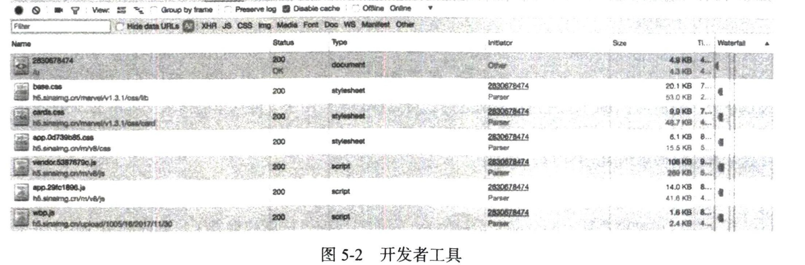
前面也提到过，这里展示的就是页面加载过程中，浏览器与服务器之间发送请求和接收响应的所有记录。
事实上，Ajax 有其特殊的请求类型，叫作 xhr。在图 5-3 中，我们可以发现一个名称以 getIndex 开头的请求，其 Type 就为 xhr，意味着这就是一个 Ajax 请求。用鼠标单击这个请求，可以查看其详细信息。
从图 5-3 的右侧可以观察这个 Ajax 请求的 Request Headers、URL 和 Response Headers 等信息。其中 Request Headers 中有一个信息为 X-Requested-With:XMLHttpRequest，这就标记了此请求是 Ajax 请求，如图 5-4 所示。
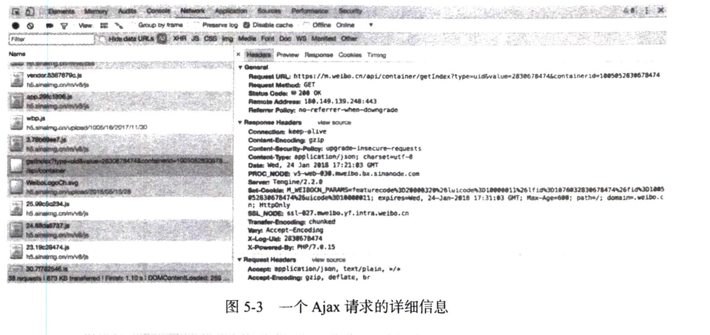
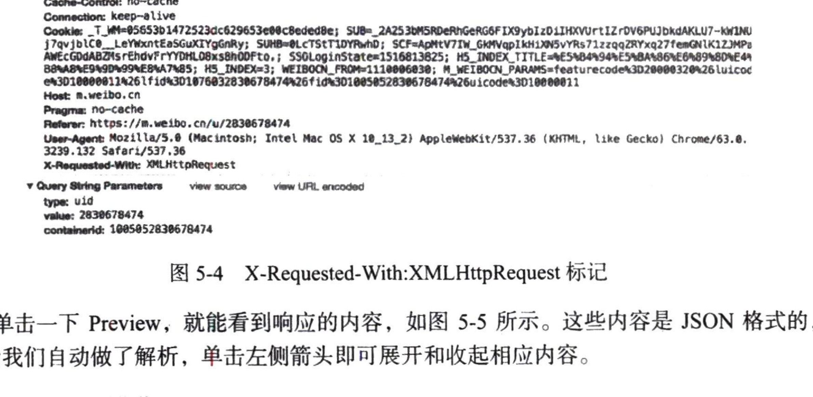
随后单击一下 Preview，就能看到响应的内容，如图 5-5 所示。这些内容是 JSON 格式的，这里Chrome 为我们自动做了解析，单击左侧箭头即可展开和收起相应内容。
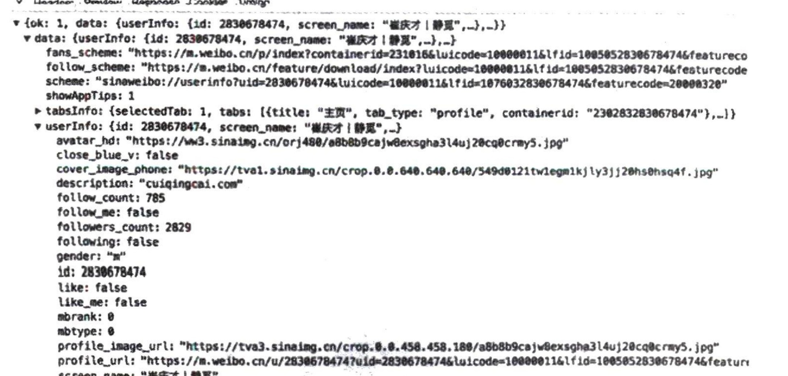
经过观察可以发现，这里的返回结果是我的个人信息，如昵称、简介、头像等，这也是渲染个人主页所使用的数据。JavaScript 接收到这些数据之后，再执行相应的渲染方法，整个页面就渲染出来了。
另外，也可以切换到 Response 选项卡，从中观察真实的返回数据，如图 5-6 所示：
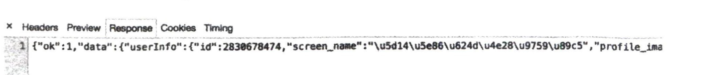
接下来，切回第一个请求，观察一下它的 Response 是什么，如图 5-7 所示。
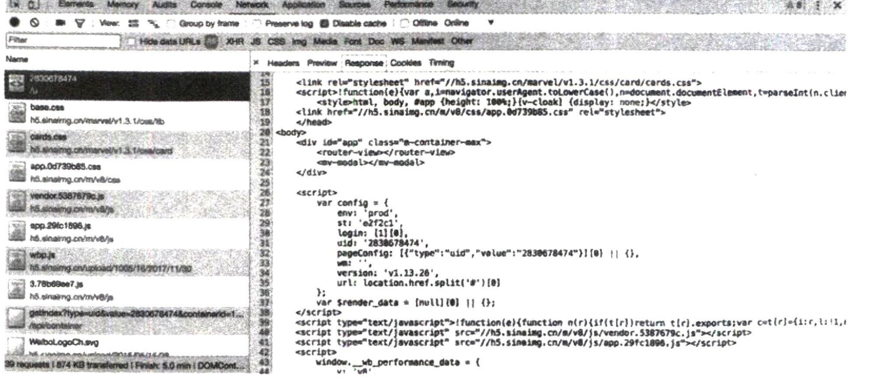
这是最原始的链接 https://m.weibo.cn/u/2830678474 返回的结果，其代码只有不到 50 行，结构也非常简单，只是执行了一些 JavaScript 语句。
所以说，微博页面呈现给我们的真实数据并不是最原始的页面返回的，而是执行 JavaScript 后再次向后台发送 Ajax 请求，浏览器拿到服务器返回的数据后进一步渲染得到的。
2. 过滤请求
利用 Chrome 开发者工具的筛选功能能够筛选出所有 Ajax 请求。在请求的上方有一层筛选栏，直接单击 XHR，之后下方显示的所有请求便都是 Ajax 请求了，如图 5-8 所示。
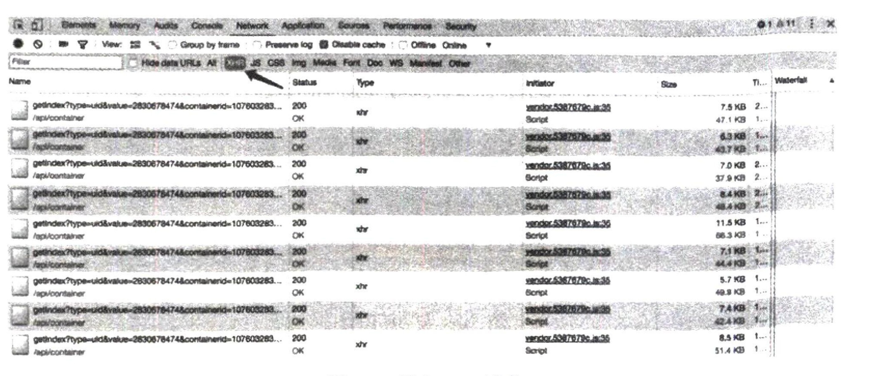
接下来，不断向上滑动微博页面，可以看到页面底部有一条条新的微博被刷出，开发者工具下方也出现了一个个新的 Ajax 请求，这样我们就可以捕获所有的 Ajax 请求了。
随意点开其中一个条目，都可以清楚地看到其 Request URL、Request Headers、Response Headers、Response Body 等内容，此时想要模拟 Ajax 请求的发送和数据的提取就非常简单了。图 5-9 展示的内容便是我的某一页微博的列表信息。
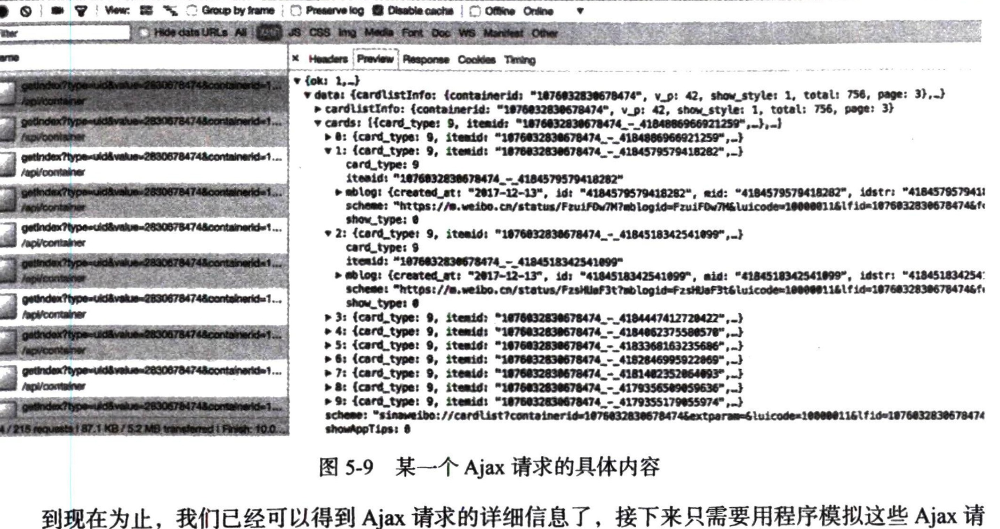
到现在为止，我们已经可以得到 Ajax 请求的详细信息了，接下来只需要用程序模拟这些 Ajax 请求，就可以轻松提取我们所需的信息。
5.3 Ajax 分析与爬取实战
本节我们会结合一个实际的案例，来看一下 Ajax 分析和爬取页面的具体实现。
1. 准备工作
开始分析之前，需要做好如下准备工作。
安装好 Python 3（最低为 3.6 版本），并成功运行 Python 3 程序。
了解 Python HTTP 请求库 requests 的基本用法。
了解 Ajax 基础知识和分析 Ajax 的基本方法。
以上内容在前面的章节中均有讲解，如尚未准备好，建议先熟悉一下这些内容。
2. 爬取目标
本节我们以一个示例网站来试验一下 Ajax 的爬取，其链接为：https://spa1.scrape.center/，该示例网站的数据请求是通过 Ajax 完成的，页面的内容是通过 JavaScript 渲染出来的，页面如图 5-10所示。
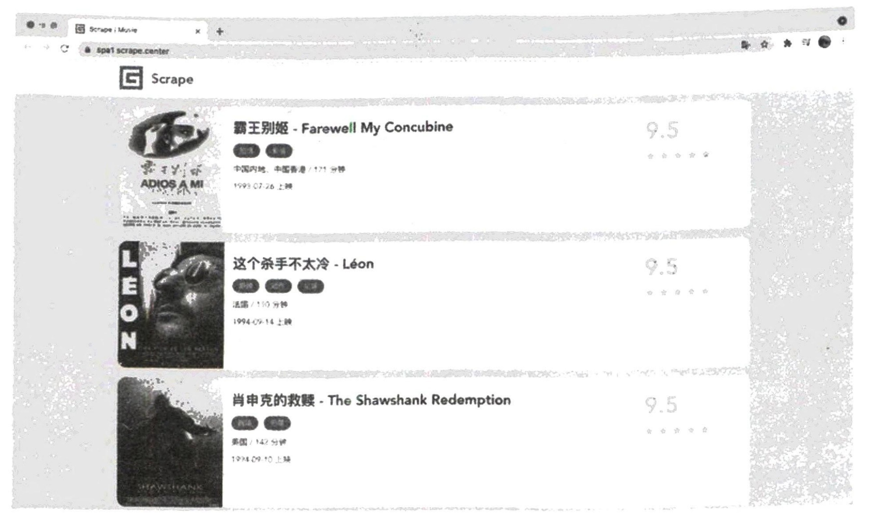
大家看着这个页面可能觉得似曾相识，这个网站不是第 2 章也列举过吗？其实不是一个网站。两个网站的后台实现逻辑和数据加载方式完全不同，只有最后呈现的样式是一样的。
这个网站同样支持翻页，可以单击页面最下方的页码来切换到下一页，如图 5-11 所示。
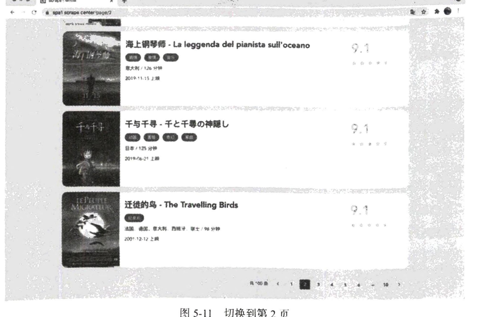
单击每部电影进入对应的详情页，这些页面的结构也是完全一样的，图 5-12 展示的是《迁徙的鸟》的详情页。
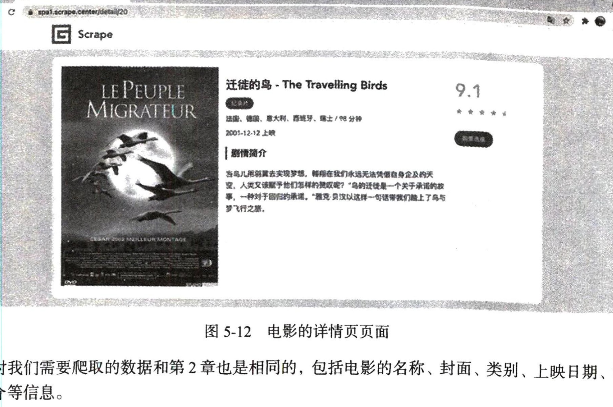
此时我们需要爬取的数据和第 2 章也是相同的，包括电影的名称、封面、类别、上映日期、评分、剧情简介等信息。
本节我们需要完成的目标如下。
分析页面数据的加载逻辑。
用 requests 实现 Ajax 数据的爬取。
将每部电影的数据分别保存到 MongoDB 数据库。
由于本节主要讲解 Ajax，所以数据存储和加速部分就不再展开详细实现了，主要是讲解 Ajax 分析和爬取的实现。
好，现在就开始吧。
3. 初步探索
我们先尝试用之前的 requests 直接提取页面，看看会得到怎样的结果。用最简单的代码实现一下requests 获取网站首页源码的过程，代码如下：
import requests
url = 'https://spa1.scrape.center/'
html = requests.get(url).text
print(html)运行结果如下：
<!DOCTYPE html><html lang=en><head><meta charset=utf-8><meta http-equiv=X-UA-Compatible content="IE=edge">
<meta name=viewport content="width=device-width,initial-scale=1"><link rel=icon href=/favicon.ico><title>
Scrape | Movie</title><link href=/css/chunk-700f70e1.1126d090.css rel=prefetch><link href=/css/chunk-d1db5eda.
0ff76b36.css rel=prefetch><link href=/js/chunk-700f70e1.0548e2b4.js rel=prefetch><link href=/js/chunk-
d1db5eda.b564504d.js rel=prefetch><link href=/css/app.ea9d802a.css rel=preload as=style><link href=/js/app.
1435ecd5.js rel=preload as=script><link href=/js/chunk-vendors.77daf991.js rel=preload as=script><link
href=/css/app.ea9d802a.css rel=stylesheet></head><body><noscript><strong>We're sorry but portal doesn't work
properly without JavaScript enabled. Please enable it to continue.</strong></noscript><div id=app></div>
<script src=/js/chunk-vendors.77daf991.js></script><script src=/js/app.1435ecd5.js></script></body></html>可以看到，爬取结果就只有这么一点 HTML 内容，而我们在浏览器中打开这个网站，却能看到如图 5-13 所示的页面。
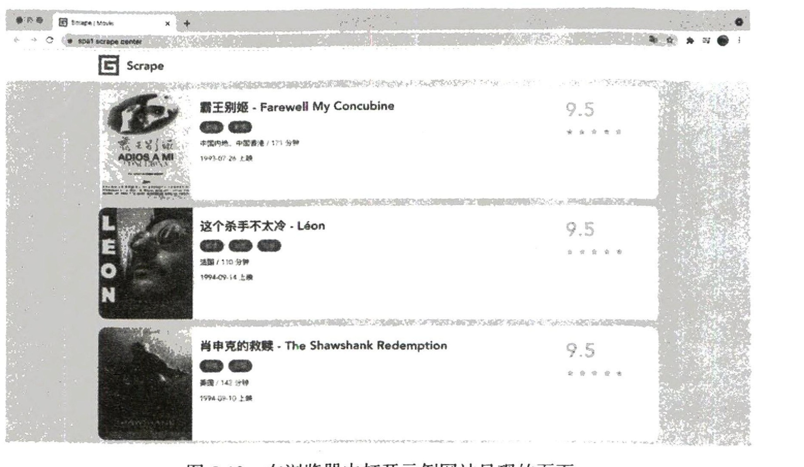
在 HTML 中，我们只能看到源码引用的一些 JavaScript 和 CSS 文件，并没有观察到任何电影数据信息。
遇到这样的情况，说明我们看到的整个页面都是 JavaScript 渲染得到的，浏览器执行了 HTML 中引用的 JavaScript 文件，JavaScript 通过调用一些数据加载和页面渲染方法，才最终呈现了图 5-13 展示的结果。这些电影数据一般是通过 Ajax 加载的，JavaScript 在后台调用 Ajax 数据接口，得到数据之后，再对数据进行解析并渲染呈现出来，得到最终的页面。所以要想爬取这个页面，直接爬取 Ajax 接口，再获取数据就好了。
在 5.2 节，我们已经了解了 Ajax 分析的基本方法，下面一起分析一下 Ajax 接口的逻辑并实现数据爬取吧。
4. 爬取列表页
首先分析列表页的 Ajax 接口逻辑，打开浏览器开发者工具，切换到 Network 面板，勾选 Preserve Log 并切换到 XHR 选项卡，如图 5-14 所示。
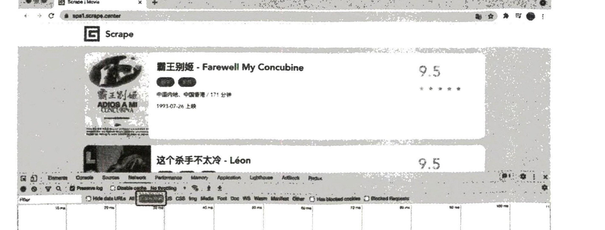
接着重新刷新页面，再单击第 2 页、第 3 页、第 4 页的按钮，这时可以观察到不仅页面上的数据发生了变化，开发者工具下方也监听到了几个 Ajax 请求。
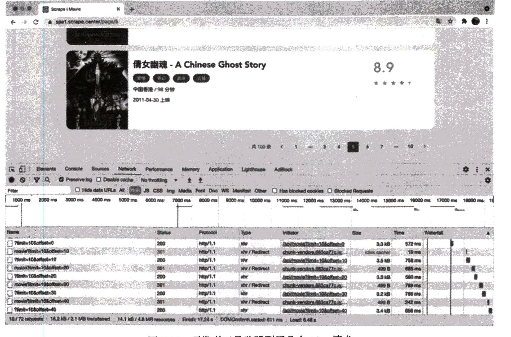
我们切换了 4 页，每次翻页也出现了对应的 Ajax 请求。可以点击查看其请求详情，观察请求 URL、参数和响应内容是怎样的，如图 5-16 所示。
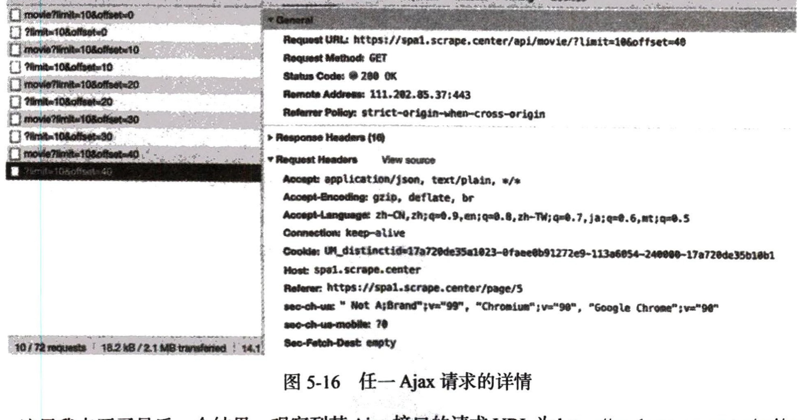
这里我点开了最后一个结果，观察到其 Ajax 接口的请求 URL 为 https://spa1.scrape.center/api/movie/?limit=10&offset=40，这里有两个参数：一个是 limit，这里是 10；一个是 offset，这里是 40。
观察多个 Ajax 接口的参数，我们可以总结出这么一个规律：limit 一直为 10，正好对应每页 10 条数据；offset 在依次变大，页数每加 1，offset 就加 10，因此其代表页面的数据偏移量。例如第 2 页的 offset 为 10 就代表跳过 10 条数据，返回从 11 条数据开始的内容，再加上 limit 的限制，最终页面呈现的就是第 11 条至第 20 条数据。
接着我们再观察一下响应内容，切换到 Preview 选项卡，结果如图 5-17 所示。
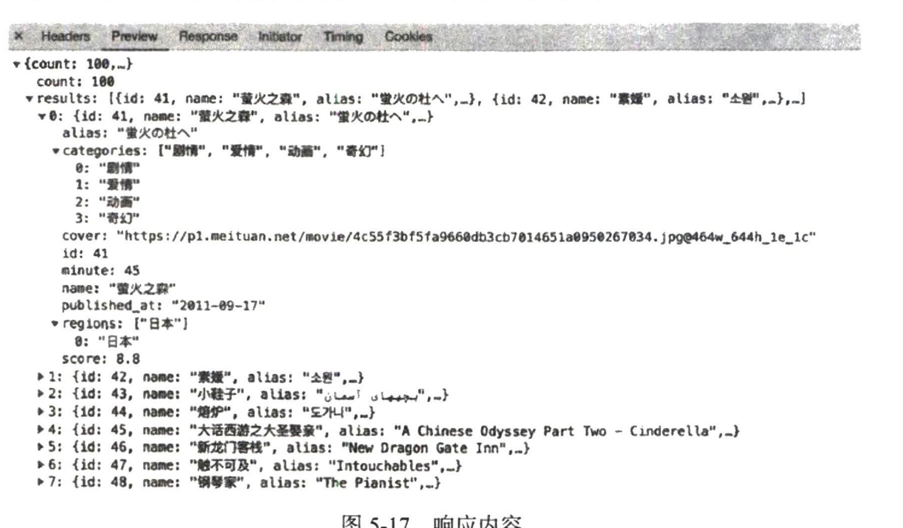
可以看到，结果就是一些 JSON 数据，其中有一个 results 字段，是一个列表，列表中每一个元素都是一个字典。观察一下字典的内容，里面正好可以看到对应电影数据的字段，如 name、alias、cover、categories。对比一下浏览器页面中的真实数据，会发现各项内容完全一致，而且这些数据已经非常结构化了，完全就是我们想要爬取的数据，真的是得来全不费工夫。
这样的话，我们只需要构造出所有页面的 Ajax 接口，就可以轻松获取所有列表页的数据了。
先定义一些准备工作，导入一些所需的库并定义一些配置，代码如下：
import requests
import logging
logging.basicConfig(level=logging.INFO,
format='%(asctime)s - %(levelname)s: %(message)s')
INDEX_URL = 'https://spa1.scrape.center/api/movie/?limit={limit}&offset={offset}'这里我们引入了 requests 和 logging 库，并定义了 logging 的基本配置。接着定义了 INDEX_URL，这里把 limit 和 offset 预留出来变成占位符，可以动态传入参数构造一个完整的列表页 URL。
下面我们实现一下详情页的爬取。还是和原来一样，我们先定义一个通用的爬取方法，其代码如下：
def scrape_api(url):
logging.info('scraping %s...', url)
try:
response = requests.get(url)
if response.status_code == 200:
return response.json()
logging.error('get invalid status code %s while scraping %s', response.status_code, url)
except requests.RequestException:
logging.error('error occurred while scraping %s', url, exc_info=True)这里我们定义了一个 scrape_api 方法，和之前不同的是，这个方法专门用来处理 JSON 接口。最后的 response 调用的是 json 方法，它可以解析响应内容并将其转化成 JSON 字符串。
接着在这个基础之上，定义一个爬取列表页的方法，其代码如下：
LIMIT = 10
def scrape_index(page):
url = INDEX_URL.format(limit=LIMIT, offset=LIMIT * (page - 1))
return scrape_api(url)这里我们定义了一个 scrape_index 方法，它接收一个参数 page，该参数代表列表页的页码。
scrape_index 方法中，先构造了一个 url，通过字符串的 format 方法，传入 limit 和 offset 的值。这里 limit 就直接使用了全局变量 LIMIT 的值；offset 则是动态计算的，计算方法是页码数减一再乘以 limit，例如第 1 页的 offset 就是 0，第 2 页的 offset 就是 10，以此类推。构造好 url 后，直接调用 scrape_api 方法并返回结果即可。
这样我们就完成了列表页的爬取，每次发送 Ajax 请求都会得到 10 部电影的数据信息。
由于这时爬取到的数据已经是 JSON 类型了，所以无须像之前那样去解析 HTML 代码来提取数据，爬到的数据已经是我们想要的结构化数据，因此解析这一步可以直接省略啦。
到此为止，我们能成功爬取列表页并提取电影列表信息了。
5. 爬取详情页
虽然我们已经可以拿到每一页的电影数据，但是这些数据实际上还缺少一些我们想要的信息，如剧情简介等信息，所以需要进一步进入详情页来获取这些内容。
单击任意一部电影，如《教父》，进入其详情页，可以发现此时的页面 URL 已经变成了 https://spa1.scrape.center/detail/40，页面也成功展示了《教父》详情页的信息，如图 5-18 所示。
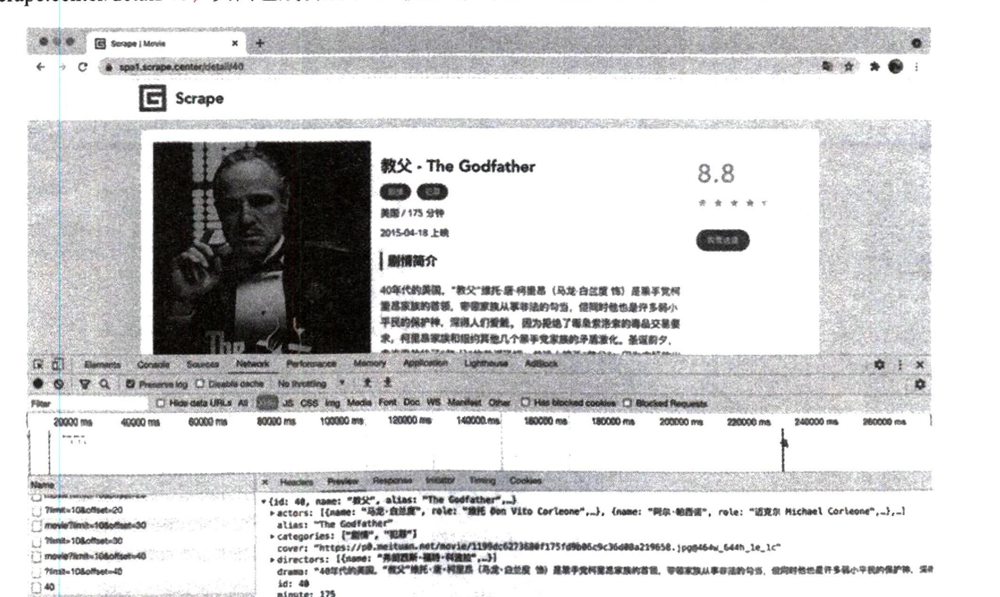
另外，我们也可以观察到开发者工具中又出现了一个 Ajax 请求，其 URL 为 https://spa1.scrape.center/api/movie/40/，通过 Preview 选项卡也能看到 Ajax 请求对应的响应信息，如图 5-19 所示。
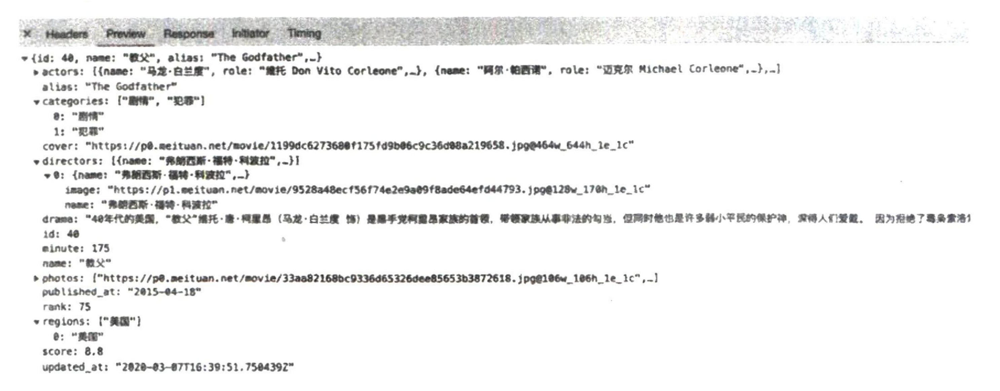
稍加观察就可以发现，Ajax 请求的 URL 后面有一个参数是可变的，这个参数是电影的 id，这里是 40，对应《教父》这部电影。
如果我们想要获取 id 为 50 的电影，只需要把 URL 最后的参数改成 50 即可，即 https://spa1.scrape.center/api/movie/50/，请求这个新的 URL 便能获取 id 为 50 的电影对应的数据了。
同样，响应结果也是结构化的 JSON 数据，其字段也非常规整，我们直接爬取即可。
现在，详情页的数据提取逻辑分析完了，怎么和列表页关联起来呢？电影 id 从哪里来呢？我们回过头看看列表页的接口返回数据，如图 5-20 所示。
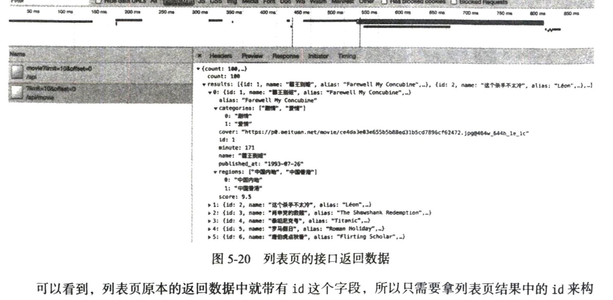
可以看到，列表页原本的返回数据中就带有 id 这个字段，所以只需要拿列表页结果中的 id 来构造详情页的 Ajax 请求的 URL 就好了。
接着，我们就先定义一个详情页的爬取逻辑，代码如下：
DETAIL_URL = 'https://spa1.scrape.center/api/movie/{id}'
def scrape_detail(id):
url = DETAIL_URL.format(id=id)
return scrape_api(url)这里定义了一个 scrape_detail 方法，它接收一个参数 id。这里的实现也非常简单，先根据定义好的 DETAIL_URL 加 id 构造一个真实的详情页 Ajax 请求的 URL，再直接调用 scrape_api 方法传入这个 url 即可。
最后，我们定义一个总的调用方法，对以上方法串联调用，代码如下：
TOTAL_PAGE = 10
def main():
for page in range(1, TOTAL_PAGE + 1):
index_data = scrape_index(page)
for item in index_data.get('results'):
id = item.get('id')
detail_data = scrape_detail(id)
logging.info('detail data %s', detail_data)
if __name__ == '__main__':
main()我们定义了一个 main 方法，该方法首先遍历获取页码 page，然后把 page 当作参数传递给scrape_index 方法，得到列表页的数据。接着遍历每个列表页的每个结果，获取每部电影的 id。之后把 id 当作参数传递给 scrape_detail 方法来爬取每部电影的详情数据，并将此数据赋值为detail_data，最后输出 detail_data 即可。
运行结果如下：
2020-03-19 02:51:55,981 - INFO: scraping https://spa1.scrape.center/api/movie/?limit=10&offset=0...
2020-03-19 02:51:56,446 - INFO: scraping https://spa1.scrape.center/api/movie/1...
2020-03-19 02:51:56,638 - INFO: detail data {'id': 1, 'name': '霸王别姬', 'alias': 'Farewell My Concubine',
'cover': 'https://p0.meituan.net/movie/ce4da3e03e655b5b88ed31b5cd7896cf62472.jpg@464w_644h_1e_1c',
'categories': ['剧情', '爱情'], 'regions': ['中国大陆', '中国香港'], 'actors': [{'name': '张国荣',
'role': '程蝶衣', ...}, ...], 'directors': [{'name': '陈凯歌', 'image': 'https://p0.meituan.net/movie/
8f9372252050095067e0e8d58ef3d939156407.jpg@128w_170h_1e_1c'}], 'score': 9.5, 'rank': 1, 'minute': 171,
'drama': '影片借一出《霸王别姬》的京戏，牵扯出三个人之间一段随时代风云变幻的爱恨情仇。段小楼（张丰毅饰）
与程蝶衣（张国荣饰）是一对打小一起长大的师兄弟，...', 'photos': [...], 'published_at': '1993-07-26',
'updated_at': '2020-03-07T16:31:36.967843Z'}
2020-03-19 02:51:56,640 - INFO: scraping https://spa1.scrape.center/api/movie/2...
2020-03-19 02:51:56,813 - INFO: detail data {'id': 2, 'name': '这个杀手不太冷', 'alias': 'Léon', 'cover':
'https://p1.meituan.net/movie/6bea9af4524dfbd0b668eaa7e187c3df767253.jpg@464w_644h_1e_1c', 'categories':
['剧情', '动作', '犯罪'], 'regions': ['法国'], 'actors': [{'name': '让·雷诺', 'role': '莱昂 Leon', ...},
...], 'directors': [{'name': '吕克·贝松', 'image': 'https://p0.meituan.net/movie/0e7d67e343bd332a
71409328340028d40496.jpg@128w_170h_1e_1c'}], 'score': 9.5, 'rank': 3, 'minute': 110, 'drama': '里昂
（让·雷诺饰）是名孤独的职业杀手，受人雇佣。一天，邻居家小姑娘马蒂尔德（纳塔丽·波特曼饰）敲开他的房门，
要求在他那里暂避杀身之祸。...', 'photos': [...], 'published_at': '1994-09-14', 'updated_at':
'2020-03-07T16:31:43.826235Z'}
...由于内容较多，这里省略了部分内容。
可以看到，整个爬取工作已经完成了，这里会依次爬取每一个列表页的 Ajax 接口，然后依次爬取每部电影的详情页 Ajax 接口，并打印出每部电影的 Ajax 接口响应数据，而且都是 JSON 格式。至此，所有电影的详情数据，我们都爬取到啦。
6. 保存数据
好，成功提取详情页信息之后，下一步就要把它们保存起来了。第 5 章我们学习了 MongoDB 的相关操作，接下来我们就把数据保存到 MongoDB 吧。
保存之前，请确保自己有一个可以正常连接和使用的 MongoDB 数据库，这里我就以本地 localhost的 MongoDB 数据库为例来进行操作，其运行在 27017 端口上，无用户名和密码。
将数据导入 MongoDB 需要用到 PyMongo 这个库。接下来我们把它们引入一下，同时定义一下MongoDB 的连接配置，实现方式如下：
MONGO_CONNECTION_STRING = 'mongodb://localhost:27017'
MONGO_DB_NAME = 'movies'
MONGO_COLLECTION_NAME = 'movies'
import pymongo
client = pymongo.MongoClient(MONGO_CONNECTION_STRING)
db = client['movies']
collection = db['movies']这里我们先声明了几个变量，如下为对它们的介绍。
MONGO_CONNECTION_STRING：MongoDB 的连接字符串，里面定义的是 MongoDB 的基本连接信息，这里是 host、port，还可以定义用户名、密码等内容。
MONGO_DB_NAME：MongoDB 数据库的名称。
MONGO_COLLECTION_NAME：MongoDB 的集合名称。
然后用 MongoClient 声明了一个连接对象 client，并依次声明了存储数据的数据库和集合。
接下来，再实现一个将数据保存到 MongoDB 数据库的方法，实现代码如下：
def save_data(data):
collection.update_one({
'name': data.get('name')
}, {
'$set': data
}, upsert=True)这里我们定义了一个 save_data 方法，它接收一个参数 data，也就是上一节提取的电影详情信息。这个方法里面，我们调用了 update_one 方法，其第一个参数是查询条件，即根据 name 进行查询；第二个参数是 data 对象本身，就是所有的数据，这里我们用 $set 操作符表示更新操作；第三个参数很关键，这里实际上是 upsert 参数，如果把它设置为 True，就可以实现存在即更新，不存在即插入的功能，更新时会参照第一个参数设置的 name 字段，所以这样可以防止数据库中出现同名的电影数据。
> 注意 实际上电影可能有同名现象，但此处场景下的爬取数据没有同名情况，当然这里更重要的是> 实现 MongoDB 的去重操作。
好的，接下来稍微改写一下 main 方法就好了，改写后如下：
def main():
for page in range(1, TOTAL_PAGE + 1):
index_data = scrape_index(page)
for item in index_data.get('results'):
id = item.get('id')
detail_data = scrape_detail(id)
logging.info('detail data %s', detail_data)
save_data(detail_data)
logging.info('data saved successfully')其实就是增加了对 save_data 方法的调用，并添加了一些日志信息。
重新运行，我们来看一下输出结果：
2020-03-19 02:51:06,323 - INFO: scraping https://spa1.scrape.center/api/movie/?limit=10&offset=0...
2020-03-19 02:51:06,440 - INFO: scraping https://spa1.scrape.center/api/movie/1...
2020-03-19 02:51:06,551 - INFO: detail data {'id': 1, 'name': '霸王别姬', 'alias': 'Farewell My Concubine',
'cover': 'https://p0.meituan.net/movie/ce4da3e03e655b5b88ed31b5cd7896cf62472.jpg@464w_644h_1e_1c',
'categories': ['剧情', '爱情'], 'regions': ['中国大陆', '中国香港'], 'actors': [{'name': '张国荣', 'role':
'程蝶衣', 'image': 'https://p0.meituan.net/movie/5de69a492dcbd3f4b014503d4e95d46c28837.jpg@128w_170h_
1e_1c'}, ..., {'name': '方征', 'role': '嫖客', 'image': 'https://p1.meituan.net/movie/39687137b23bc
9727b47fd24bdcc579b97618.jpg@128w_170h_1e_1c'}],
'directors': [{'name': '陈凯歌', 'image': 'https://p0.meituan.net/movie/8f9372252050095067e0e8d58ef3d939156407.jpg@128w_170h_1e_1c'}],
'score': 9.5, 'rank': 1, 'minute': 171, 'drama': '影片借一出《霸王别姬》的京戏，牵扯出三个人之间一段随时代风云变幻的爱恨情仇。
段小楼（张丰毅饰）与程蝶衣（张国荣饰）是一对打小一起长大的师兄弟，两人一个演生，一个饰旦，一向配合
天衣无缝，尤其一出《霸王别姬》，更是誉满京城，为此，两人约定合演一辈子《霸王别姬》。但两人对戏剧与人生
关系的理解有本质不同，段小楼深知戏非人生，程蝶衣则是人戏不分。段小楼在认为该成家立业之时迎娶了名妓菊仙
（巩俐饰），致使程蝶衣认定菊仙是可耻的第三者，使段小楼做了叛徒，自此，三人围绕一出《霸王别姬》生出的
爱恨情仇战开始随着时代风云的变迁不断升级，终酿成悲剧。', 'photos': ['https://p0.meituan.net/movie/
45be438368bb291e501dc523092f0ac8193424.jpg@106w_106h_1e_1c', ..., 'https://p0.meituan.net/movie/
0d952107429db3029b64bf4f25bd762661696.jpg@106w_106h_1e_1c'], 'published_at': '1993-07-26', 'updated_at':
'2020-03-07T16:31:36.967843Z'}
2020-03-19 02:51:06,583 - INFO: data saved successfully
2020-03-19 02:51:06,583 - INFO: scraping https://spa1.scrape.center/api/movie/2...同样，由于输出内容较多，这里省略了部分内容。
可以看到，这里成功爬取到了数据，并且提示数据存储成功，没有任何报错信息。
接下来，我们使用 Robo 3T 连接 MongoDB 数据库看下爬取结果。由于我使用的是本地的 MongoDB，所以我直接在 Robo 3T 里面输入 localhost 的连接信息即可，这里请替换成自己的 MongoDB 连接信息，如图 5-21 所示。
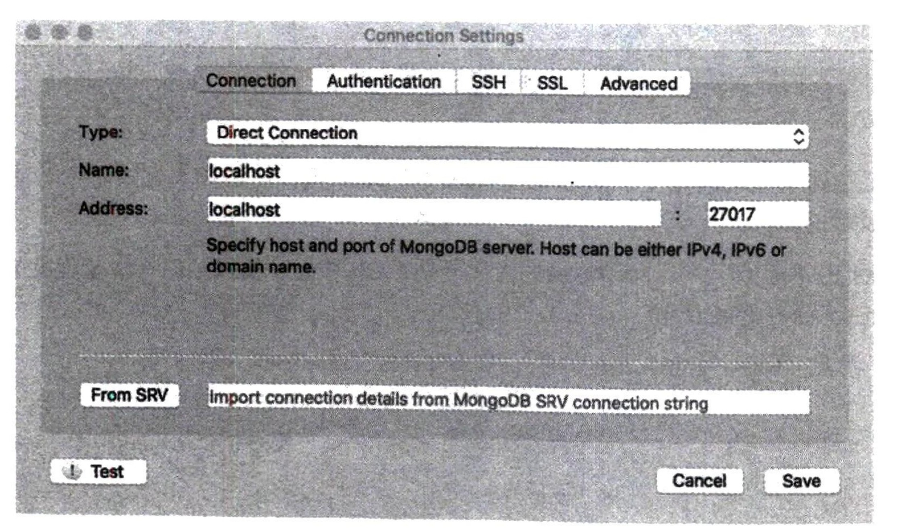
连接之后，我们便可以在 movies 这个数据库中 movies 这个集合下看到刚才爬取的数据了，如图 5-22 所示。
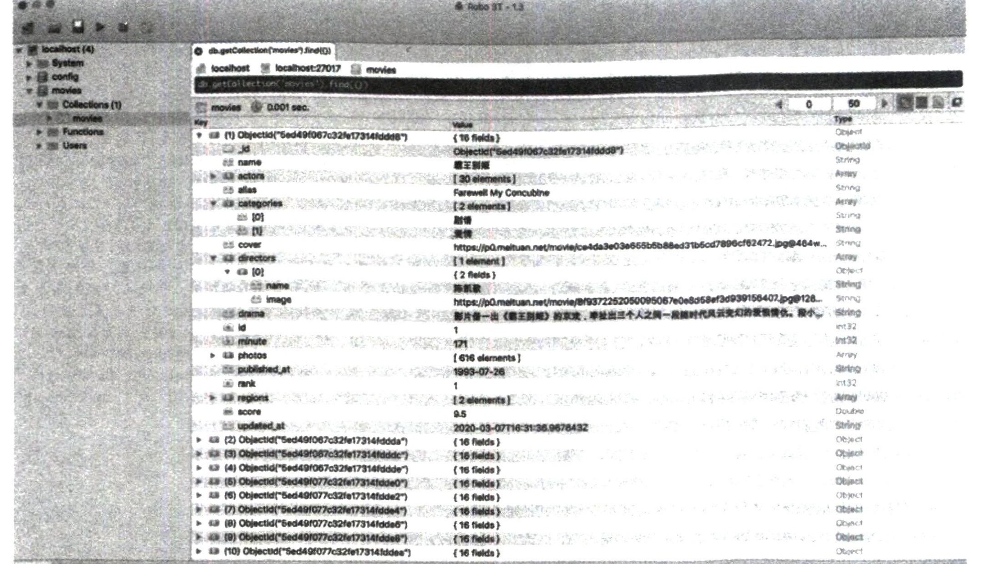
可以看到，数据就是以 JSON 格式存储的，一条数据对应一部电影的信息，各种嵌套关系也一目了然，同时第三列还标识出了数据类型。
这样就证明我们的数据成功存储到 MongoDB 里了。
7. 总结
本节我们通过一个案例体会了 Ajax 分析和爬取的基本流程，希望大家通过本节能够更加熟悉Ajax 分析和爬取的实现。
另外，我们也观察到，Ajax 接口返回的大部分是 JSON 数据，所以可以在一定程度上避免数据提取工作，这也减轻了一些工作量。
本节代码参见：https://github.com/Python3WebSpider/ScrapeSpa1。